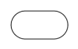
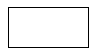
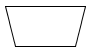
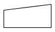
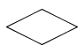
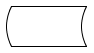
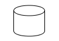
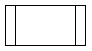
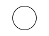
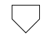

Simbol-Simbol Flowchart
Flowchart disusun dengan simbol-simbol. Simbol ini dipakai sebagai alat bantu menggambarkan proses di dalam program. Simbol-simbol yang dipakai antara lain :
- Terminator 
- Processing 
- Manual Operation 
- Manual Input 
- Decision 
- Stored Data 
- Database 
- Predefined Process 
- Connector 
- Off Page Reference 
Merupakan bagan yang menunjukkan alur kerja atau apa yang sedang dikerjakan didalam sistem secara keseluruhan dan menjelaskan urutan dari prosedur-prosedur yanhg ada di dalam sistem.
Untuk menunjukkan sebuah proses atau operasi digunakan persegi panjang. Teks dalam simbol proses ini harus menggunakan kata kerja seperti ‘mengambil data’, ‘memeriksa isian formulir’, atau yang lainnya dalam deskripsi yang singkat dan jelas.
Untuk proses atau operasi yang dilakukan secara manual (tidak melibatkan komputer), dalam flow chart digambarkan dengan trapesium. Anda dapat menggunakannya untuk menggambarkan proses seperti mengisi formulir atau memeriksa dokumen.
Untuk proses memasukkan input ke dalam sistem seperti ini dalam flow chart disebut manual input. Manual input dilambangkan menggunakan segi empat yang bagian atasnya miring dan bagian kanan lebih tinggi dari bagian kiri.
Decison digunakan untuk melambangkan pengambilan keputusan bagaimana alur dalam flow chart berjalan selanjutnya berdasarkan kriteria atau pertanyaan tertentu. Decision dilambangkan dengan bentuk belah ketupat dan teks dalam simbol ini biasa menggunakan bentuk pertanyaan.
Decison digunakan untuk melambangkan pengambilan keputusan bagaimana alur dalam flow chart berjalan selanjutnya berdasarkan kriteria atau pertanyaan tertentu. Decision dilambangkan dengan bentuk belah ketupat dan teks dalam simbol ini biasa menggunakan bentuk pertanyaan.
Silinder merupakan simbol yang digunakan untuk basis data. Sebenarnya juga digunakan untuk melambangkan data yang disimpan dalam hard drive. Namun, kadang perlu membedakan data-data yang diakses dari database secara online dalam jaringan atau hanya dari komputer. Jadi, Anda dapat menggunakan simbol silinder untuk data di database dan untuk data dalam komputer dapat menggunakan stored data.
Predefined process yaitu proses yang telah kita jelaskan lebih rinci dalam flow chart tersendiri. Ini memungkinkan kita untuk menampilkan flow chart sesuai dengan tingkat detail yang kita inginkan. Misalkan, untuk tingkat manajer pada organisasi kadang hanya perlu gambaran prosedur secara umum, tidak dalam detail teknis. Ini dilambangkan dengan segi empat dengan garis ganda pada sisi tegaknya.
Connector dilambangkan dengan lingkaran kecil. Digunakan menghubungkan elemen dalam flow chart sebagai pengganti garis untuk menyederhanakan bentuk saat elemen yang akan dihubungkan jaraknya berjauhan dan ruwet jika dihubungkan dengan garis.
Connector digunakan untuk menghubungkan gambar dalam satu halaman. Jika gambar yang akan dihubungkan berada pada halaman yang berbeda maka menggunakan off-page reference yang dilambangkan dengan segi lima. Teks/label untuk connector dapat menggunakan huruf dan off-page reference menggunakan angka.